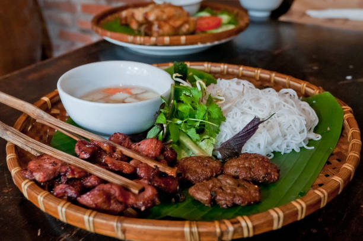

Back
Bún chả

A Classic Vietnamese Dish
Bún chả is a Vietnamese dish of grilled pork and rice noodle, originating from Hanoi, Vietnam.
It is exceedingly popular in north Vietnam, and I'm sure you'll like it too!
Ingredients
Caramel Sauce
- 70g sugar
- 150 ml hot water
Dipping Sauce and Nooodles (Bún)
- 25g sugar
- 15 ml rice vinegar or lemon juice
- 175 ml water
- 15-20 ml fish sauce
- Garlic, chili flakes and black pepper to taste
- 0.5 kg dried rice vermicelli noodles (Bún)
Grilled Pork (Chả)
- 450g fatty pork shoulder and/or pork belly
- 450g fatty ground pork
- 50g shallots
- 15g garlic
- Fish sauce
- Oyster sauce
Picked Vegetables
- 400g green papaya, carrots, and kohlrabi
- 25g sugar
- 15 ml lemon juice or rice vinegar
- 1 tsp salt
- Fresh herbs such as coriander, perilla or Vietnamese balm
Steps
Step 1 - Marinating the chả
Step 2 - Making pickles and dipping sauce
Step 3 - Grilling the chả
Step 4 - Cooking the bún